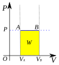

isobaric-process
process

Source: Wikipedia
Wikipedia Page (Something wrong with this association? Let us know.)
Wikidata Page (Something wrong with this association? Let us know.)
Occurs in:
- aluminum_isobaric-process__mass-specific_heat_capacity
- anvil_isobaric-process__heat_capacity
- atmosphere_air_isobaric-process__mass-specific_heat_capacity
- atmosphere_air_isobaric-process__volume-specific_heat_capacity
- atmosphere_bottom_air_isobaric-process__mass-specific_heat_capacity
- chocolate_isobaric-process__mass-specific_heat_capacity
- chocolate_isobaric-process__volume-specific_heat_capacity
- glacier_ice_isobaric-process__mass-specific_heat_capacity
- glacier_ice_isobaric-process__volume-specific_heat_capacity
- ice_isobaric-process__mass-specific_heat_capacity
- ice_isobaric-process__volume-specific_heat_capacity
- sea_ice_isobaric-process__mass-specific_heat_capacity
- sea_ice_isobaric-process__volume-specific_heat_capacity
- sea_water_isobaric-process__mass-specific_heat_capacity
- sea_water_isobaric-process__volume-specific_heat_capacity
- snow_isobaric-process__mass-specific_heat_capacity
- snow_isobaric-process__volume-specific_heat_capacity
- snowpack_isobaric-process__z_mean_of_mass-specific_heat_capacity
- soil_isobaric-process__mass-specific_heat_capacity
- soil_isobaric-process__volume-specific_heat_capacity
- earth-crust_material_isobaric-process__mass-specific_heat_capacity
- earth-crust_material_isobaric-process__volume-specific_heat_capacity
- earth-mantle_material_isobaric-process__mass-specific_heat_capacity
- earth-mantle_material_isobaric-process__volume-specific_heat_capacity